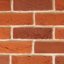
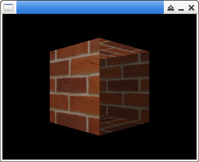

Steward
分享是一種喜悅、更是一種幸福
程式語言 - Simple DirectMedia Layer (SDL) - v1.2 - C/C++ - OpenGL 1.0 - Apply Lighting
main.c
#include <math.h>
#include <stdio.h>
#include <stdlib.h>
#include <SDL.h>
#include <GL/gl.h>
int main( int argc, char *argv[])
{
const int W = 320;
const int H = 240;
GLuint tex = 0;
GLdouble nearPlane = 0.1;
GLdouble farPlane = 100.0;
GLdouble top = nearPlane * tan(45.0 * 3.14159 / 360.0);
GLdouble right = top * ((GLfloat)W / (GLfloat)H);
SDL_Surface *bmp = NULL;
SDL_Surface *screen = NULL;
SDL_Init(SDL_INIT_VIDEO);
screen = SDL_SetVideoMode(W, H, 16, SDL_SWSURFACE | SDL_OPENGL);
bmp = SDL_LoadBMP("main.bmp");
glGenTextures(1, &tex);
glBindTexture(GL_TEXTURE_2D, tex);
glEnable(GL_TEXTURE_2D);
glTexImage2D(GL_TEXTURE_2D, 0, GL_RGB, bmp->w, bmp->h, 0, GL_BGR, GL_UNSIGNED_BYTE, bmp->pixels);
glTexParameteri(GL_TEXTURE_2D, GL_TEXTURE_MIN_FILTER, GL_LINEAR);
glTexParameteri(GL_TEXTURE_2D, GL_TEXTURE_MAG_FILTER, GL_LINEAR);
GLfloat LightAmbient[] = {0.1f, 0.1f, 0.1f, 1.0f};
GLfloat LightDiffuse[] = {1.0f, 1.0f, 1.0f, 1.0f};
GLfloat LightPosition[] = {3.0f, 3.0f, 3.0f, 1.0f};
glEnable(GL_LIGHTING);
glEnable(GL_LIGHT1);
glLightfv(GL_LIGHT1, GL_AMBIENT, LightAmbient);
glLightfv(GL_LIGHT1, GL_DIFFUSE, LightDiffuse);
glLightfv(GL_LIGHT1, GL_POSITION, LightPosition);
glEnable(GL_COLOR_MATERIAL);
glColorMaterial(GL_FRONT_AND_BACK, GL_AMBIENT_AND_DIFFUSE);
glViewport(0, 0, W, H);
glMatrixMode(GL_PROJECTION);
glFrustum(-right, right, -top, top, nearPlane, farPlane);
glMatrixMode(GL_MODELVIEW);
glLoadIdentity();
glTranslatef(0.0f, 0.0f, -5.0f);
glRotatef(45, 0.0f, 1.0f, 0.0f);
glBindTexture(GL_TEXTURE_2D, tex);
glBegin(GL_QUADS);
glNormal3f(0.0f, 0.0f, 1.0f);
glTexCoord2f(0.0f, 1.0f); glVertex3f(-1.0f, -1.0f, 1.0f);
glTexCoord2f(1.0f, 1.0f); glVertex3f(1.0f, -1.0f, 1.0f);
glTexCoord2f(1.0f, 0.0f); glVertex3f(1.0f, 1.0f, 1.0f);
glTexCoord2f(0.0f, 0.0f); glVertex3f(-1.0f, 1.0f, 1.0f);
glNormal3f(0.0f, 0.0f, -1.0f);
glTexCoord2f(0.0f, 0.0f); glVertex3f(-1.0f, -1.0f, -1.0f);
glTexCoord2f(0.0f, 1.0f); glVertex3f(-1.0f, 1.0f, -1.0f);
glTexCoord2f(1.0f, 1.0f); glVertex3f(1.0f, 1.0f, -1.0f);
glTexCoord2f(1.0f, 0.0f); glVertex3f(1.0f, -1.0f, -1.0f);
glNormal3f(0.0f, 1.0f, 0.0f);
glTexCoord2f(1.0f, 1.0f); glVertex3f(-1.0f, 1.0f, -1.0f);
glTexCoord2f(1.0f, 0.0f); glVertex3f(-1.0f, 1.0f, 1.0f);
glTexCoord2f(0.0f, 0.0f); glVertex3f(1.0f, 1.0f, 1.0f);
glTexCoord2f(0.0f, 1.0f); glVertex3f(1.0f, 1.0f, -1.0f);
glNormal3f(0.0f, -1.0f, 0.0f);
glTexCoord2f(0.0f, 1.0f); glVertex3f(-1.0f, -1.0f, -1.0f);
glTexCoord2f(1.0f, 1.0f); glVertex3f(1.0f, -1.0f, -1.0f);
glTexCoord2f(1.0f, 0.0f); glVertex3f(1.0f, -1.0f, 1.0f);
glTexCoord2f(0.0f, 0.0f); glVertex3f(-1.0f, -1.0f, 1.0f);
glNormal3f(1.0f, 0.0f, 0.0f);
glTexCoord2f(0.0f, 0.0f); glVertex3f(1.0f, -1.0f, -1.0f);
glTexCoord2f(0.0f, 1.0f); glVertex3f(1.0f, 1.0f, -1.0f);
glTexCoord2f(1.0f, 1.0f); glVertex3f(1.0f, 1.0f, 1.0f);
glTexCoord2f(1.0f, 0.0f); glVertex3f(1.0f, -1.0f, 1.0f);
glNormal3f(-1.0f, 0.0f, 0.0f);
glTexCoord2f(1.0f, 0.0f); glVertex3f(-1.0f, -1.0f, -1.0f);
glTexCoord2f(0.0f, 0.0f); glVertex3f(-1.0f, -1.0f, 1.0f);
glTexCoord2f(0.0f, 1.0f); glVertex3f(-1.0f, 1.0f, 1.0f);
glTexCoord2f(1.0f, 1.0f); glVertex3f(-1.0f, 1.0f, -1.0f);
glEnd();
SDL_GL_SwapBuffers();
SDL_Delay(3000);
SDL_FreeSurface(bmp);
SDL_Quit();
return 0;
}
編譯、執行
$ gcc main.c -I/usr/include/SDL -o main -lSDL -lGL $ ./main

